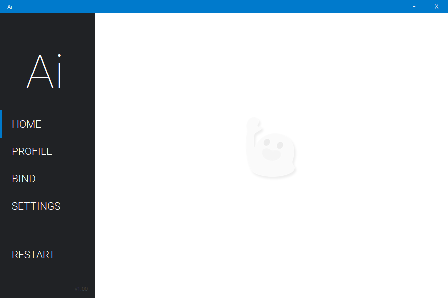

SAMPL Keybinder

Information
SAMPL (pronounced sample) is a free keybinder application mainly designed for GTA SA:MP but can also be used as an universal keybinder. SAMPL was build and tested around Windows 10 and requires you to have .NET framework 4.6.1 (or newer) installed in order to run.
CONTACT
Since I don't have a website or social media, the only way to contact me is on Discord at Aiden#2368.
Should any updates be made to this application please head to the following BitBucket repo to get an updated version https://bitbucket.org/Aiden2368/sampl-keybinder
NOTE
SAMPL was developed for the English speaking audience and their users, this is why when binding hotkeys the application is expecting you to use an US American keyboard layout. If you use a different keyboard layout other than the US American one you might experience some differences.
DISCLAIMER
I do not intend to make any profit with this application. All images used in this application (except the executable icon) belong to their rightful owners.
This application is a freeware. You have the right to redistribute and to use this application for whatever purpose you seem fit. Please do not monetize this application in any shape or form.
CONTACT
Since I don't have a website or social media, the only way to contact me is on Discord at Aiden#2368.
Should any updates be made to this application please head to the following BitBucket repo to get an updated version https://bitbucket.org/Aiden2368/sampl-keybinder
NOTE
SAMPL was developed for the English speaking audience and their users, this is why when binding hotkeys the application is expecting you to use an US American keyboard layout. If you use a different keyboard layout other than the US American one you might experience some differences.
DISCLAIMER
I do not intend to make any profit with this application. All images used in this application (except the executable icon) belong to their rightful owners.
This application is a freeware. You have the right to redistribute and to use this application for whatever purpose you seem fit. Please do not monetize this application in any shape or form.
Features
- Compatible with SAMPCAC
- Easy to manage hotkeys
- Bind as many hotkeys as you want
- Target other windows
- Automatically opens chat
- Prevents hotkeys from being sent while typing in chat
- Profiles
- Load last profile on startup
- Automatically activates hotkeys
- Start UI minimized
- Pause application with one single button press
Profile
The PROFILE tab is where you find your profiles.
Saved profiles are located in %appdata%\SAMPL Keybinder\Profiles incase you want to share them with your friends.
Saved profiles are located in %appdata%\SAMPL Keybinder\Profiles incase you want to share them with your friends.
Bind
The BIND tab is where you you can bind hotkeys. These hotkeys can be saved into a profile.
WILDCARD
A function to prevent other held down keyboard buttons from interfering with your hotkey. Allows your hotkey to be triggered despite other keyboard buttons being "in the way".Good example would be when you walk down the street in GTA pressing ALT+W and you want to send a hotkey bound to (1), this wouldn't work if your hotkey wasn't a Wildcard. Wildcard hotkeys are distinguished by a bold font.
ACTIVATED
Activate / deactivate your hotkey. Deactivated hotkeys are distinguished by being greyed out.
KEY
The key to bind a text output to. Just press some buttons and the application will fetch your key combination.
PAUSE button won't be accepted in this field. The PAUSE key is already reserved to pause/unpause the application once inside your target window. The application is expecting you to use an US American keyboard layout. If you use an other keyboard layout you might experience some differences when binding and executing a hotkey.
TEXT
The text output to bind to a key.
The text does not trigger other hotkeys. Incase you target GTA:SA:MP you won't need to insert T infront of your text to open the chat. The application does this automatically just for GTA:SA:MP. If you're not targeting GTA:SA:MP and want the application to press the ENTER button before sending the text please insert {enter} at the very beginning of your text. This will tell the application to first press Enter then send your text. If you're targeting GTA:SA:MP and want to send multiple lines of text bound to one hotkey, please insert \n after a sentence if you want the next sentence to be sent separately. This only applies to hotkeys whose finish is ENTER.
Example text: /engine\n/lights
This would result in /engine and /lights being sent immediately after one another.
FINISH
The action that happens after your text is sent.
None => does nothing. Application is suspended and won't send any other hotkeys unless ENTER or ESCAPE is pressed. This temporary hotkey suspension prevents other hotkeys from being sent while typing something in chat.
Enter => Presses ENTER right away after the text has been sent.
Offset from right => Once your text has been sent, the application will move your carret X amount of times to the left depending on your offset number. Hotkeys are temporarily suspended.
PAUSE / CONTINUE
Pauses and unpauses the application just like the PAUSE button on the keyboard would. Unlike the PAUSE button on the keyboard, pressing these two buttons will always pause/unpause the application no matter which window is active.
END NOTEIf you want to edit an already existing hotkey, select and edit it - then hit ADD. The application will overwrite everything inside the hotkey (text, offset, finish etc.) besides the key. You will have to restart the application if you want the changes to take effect.
WILDCARD
A function to prevent other held down keyboard buttons from interfering with your hotkey. Allows your hotkey to be triggered despite other keyboard buttons being "in the way".Good example would be when you walk down the street in GTA pressing ALT+W and you want to send a hotkey bound to (1), this wouldn't work if your hotkey wasn't a Wildcard. Wildcard hotkeys are distinguished by a bold font.
ACTIVATED
Activate / deactivate your hotkey. Deactivated hotkeys are distinguished by being greyed out.
KEY
The key to bind a text output to. Just press some buttons and the application will fetch your key combination.
PAUSE button won't be accepted in this field. The PAUSE key is already reserved to pause/unpause the application once inside your target window. The application is expecting you to use an US American keyboard layout. If you use an other keyboard layout you might experience some differences when binding and executing a hotkey.
TEXT
The text output to bind to a key.
The text does not trigger other hotkeys. Incase you target GTA:SA:MP you won't need to insert T infront of your text to open the chat. The application does this automatically just for GTA:SA:MP. If you're not targeting GTA:SA:MP and want the application to press the ENTER button before sending the text please insert {enter} at the very beginning of your text. This will tell the application to first press Enter then send your text. If you're targeting GTA:SA:MP and want to send multiple lines of text bound to one hotkey, please insert \n after a sentence if you want the next sentence to be sent separately. This only applies to hotkeys whose finish is ENTER.
Example text: /engine\n/lights
This would result in /engine and /lights being sent immediately after one another.
FINISH
The action that happens after your text is sent.
None => does nothing. Application is suspended and won't send any other hotkeys unless ENTER or ESCAPE is pressed. This temporary hotkey suspension prevents other hotkeys from being sent while typing something in chat.
Enter => Presses ENTER right away after the text has been sent.
Offset from right => Once your text has been sent, the application will move your carret X amount of times to the left depending on your offset number. Hotkeys are temporarily suspended.
PAUSE / CONTINUE
Pauses and unpauses the application just like the PAUSE button on the keyboard would. Unlike the PAUSE button on the keyboard, pressing these two buttons will always pause/unpause the application no matter which window is active.
END NOTEIf you want to edit an already existing hotkey, select and edit it - then hit ADD. The application will overwrite everything inside the hotkey (text, offset, finish etc.) besides the key. You will have to restart the application if you want the changes to take effect.
Settings
Self explanatory for the most part.
Target all windows¹
Choose if you want the hotkeys to trigger in every window.
Target specific window other than SAMP¹
Choose if you want the application to target an other window. Hotkeys will only trigger when your window is active.
¹ Hotkeys won't work in SAMP due to the structure of the code and some security reasons.
Target all windows¹
Choose if you want the hotkeys to trigger in every window.
Target specific window other than SAMP¹
Choose if you want the application to target an other window. Hotkeys will only trigger when your window is active.
¹ Hotkeys won't work in SAMP due to the structure of the code and some security reasons.
Restart
In order for each hotkey change to take effect a restart is required. Click this tab and the application will restart itself. Don't forget to save your profile. Use the Save profile on restart function if necessary.
Did you know?
If you create a file called wallpaper.txt inside %appdata%\SAMPL Keybinder it will allow you to set a custom wallpaper for the HOME tab. After you create the file just paste in an image link from the web or an image path on your local computer. The application will then use your link or image path to fetch the wallpaper.
You can have multiple wallpapers. Simply add a new line for each link or image path
Once multiple wallpapers are provided the application will choose a random image on each application start
Recommended image resolution is 710x573
Image path to your image on your local computer must be an absolute path